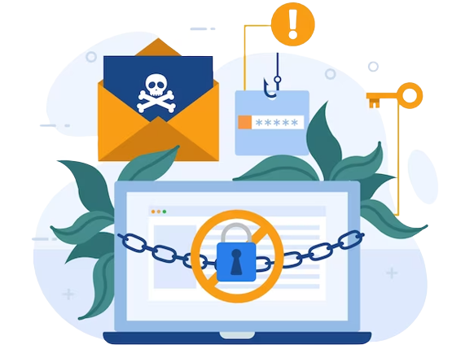
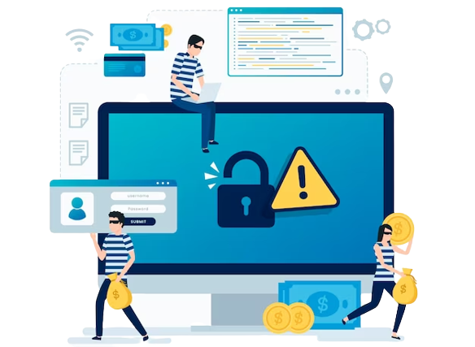

Mastering Office 365 Phishing Protection: Best Practices For Keeping Your Data Safe
Office 365 has become a cornerstone of productivity and collaboration for individuals and organizations worldwide. However, its popularity has also made it a prime target for cybercriminals, especially in the realm of phishing attacks.
Phishing remains one of the most prevalent and dangerous cyber threats, aiming to steal sensitive data, compromise accounts, and gain unauthorized access to valuable information. To safeguard your data and keep cybercriminals at bay, mastering Office 365 phishing protection is essential. In this comprehensive guide, we will explore the best practices for securing your Office 365 environment against phishing threats. Please visit phishprotection.com for additional information.
1. Enable Multi-Factor Authentication (MFA)
Multi-factor authentication (MFA) is a fundamental defense against phishing attacks. By requiring users to provide an additional layer of verification beyond their passwords, MFA significantly reduces the risk of unauthorized access, even if phishing attempts succeed in obtaining login credentials. Office 365 provides robust MFA options, such as one-time codes, biometrics, or phone call verifications, which should be enabled for all user accounts.
2. Educate and Raise Awareness

- Phishing attacks often succeed due to human error and lack of awareness.
- Educating employees and users about the various types of phishing schemes, common tactics used by cybercriminals, and the importance of vigilance when handling emails and attachments is crucial.
- Conduct regular training sessions, simulate phishing scenarios, and share real-world examples to reinforce the importance of staying alert.
3. Implement Advanced Threat Protection (ATP)
Microsoft's Office 365 Advanced Threat Protection (ATP) offers an additional layer of security against sophisticated phishing threats. ATP uses machine learning and behavioral analysis to detect and block malicious emails, attachments, and URLs before they reach users' inboxes. By leveraging ATP, organizations can proactively mitigate the risk of falling victim to increasingly sophisticated phishing attacks.
4. Enable Anti-Phishing Policies
Office 365 allows administrators to create and enforce anti-phishing policies tailored to their organization's needs. These policies can include rules for flagging suspicious emails, blocking certain file types, or quarantining messages with malicious content. Regularly review and update these policies to adapt to evolving phishing techniques.
5. Enable Email Authentication Protocols
To prevent attackers from spoofing your domain and tricking users with fraudulent emails, enable email authentication protocols such as SPF (Sender Policy Framework), DKIM (DomainKeys Identified Mail), and DMARC (Domain-based Message Authentication, Reporting, and Conformance). These protocols help verify the authenticity of incoming emails, reducing the chances of successful phishing attempts.
6. Use Safe Links and Safe Attachments

- Office 365's Safe Links and Safe Attachments features provide an added layer of protection by scanning URLs and attachments in real-time.
- Safe Links automatically replaces URLs in emails with secure links that are checked against a list of known malicious sites.
- Safe Attachments opens attachments in a virtual sandbox environment to detect and block potentially harmful content.
7. Monitor and Analyze User Behavior
Implementing user behavior analytics can be beneficial in detecting suspicious activities that may indicate a phishing attack. Analyze login patterns, email behavior, and access requests to identify anomalies and potential security breaches. Promptly investigate any irregularities to thwart phishing attempts in their early stages.
8. Regularly Backup Data
While focusing on preventing phishing attacks, it's essential not to overlook the importance of data backup. Regularly back up your Office 365 data to ensure that, in the event of a successful attack, you can quickly recover lost or compromised information without paying ransom or suffering significant data loss.
9. Stay Informed About Emerging Threats
Visit Phishprotection Here
Phishprotection
5965 Village Way Suite 105-234 San Diego, CA 92130
Phone: +1-855-700-1386
- Phishing tactics are constantly evolving, and new threats emerge regularly.
- Stay informed about the latest phishing trends, techniques, and vulnerabilities by subscribing to security blogs, attending webinars, and networking with other cybersecurity professionals.
- A well-informed security team is better equipped to anticipate and respond to emerging threats effectively.
10. Regular Security Audits and Penetration Testing
Conduct regular security audits and penetration tests to identify potential weaknesses in your Office 365 environment. These tests simulate real-world attacks and help uncover vulnerabilities that may otherwise go unnoticed. Addressing these issues promptly strengthens your overall phishing protection strategy.
In closing, phishing attacks continue to be a significant threat to individuals and organizations relying on Office 365 for productivity and collaboration. By mastering Office 365 phishing protection and implementing these best practices, you can significantly reduce the risk of falling victim to phishing attempts. A proactive approach, combining robust technological solutions, user education, and continuous monitoring, will help ensure the safety of your data and maintain a secure Office 365 environment in the face of evolving cyber threats.